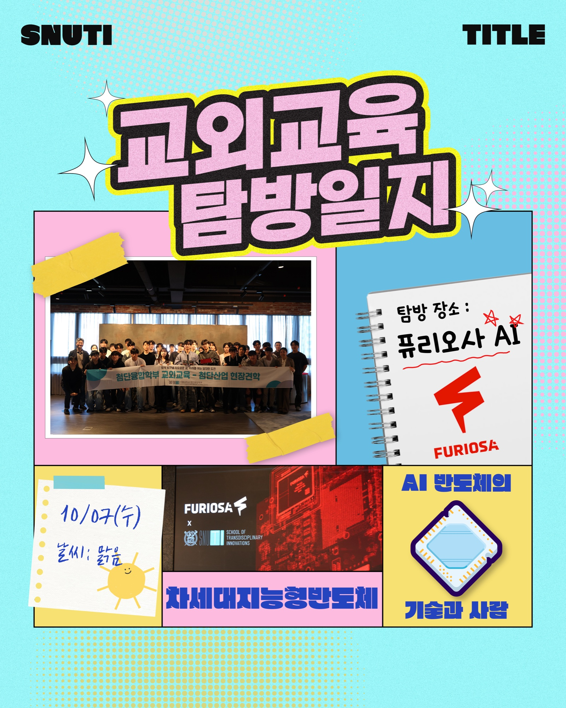

SEOUL NATIONAL UNIVERSITYFIELD NOTES
전공 밖에서 만난
기술의 장면들.
연구소와 기업의 현장, 전공을 함께 고민하는 모임에서 듣고 질문하고 배운 내용을 카드뉴스로 기록했습니다. 기술 탐방부터 예술·진로 이야기까지 열 번의 기록을 모았습니다.
기록 살펴보기10 WORKS39 CARD PAGES

현장 기록 · 03AI 반도체의개발 현장을 찾다첨단융합학부 교외교육
LEARNING OUTSIDE THE CLASSROOM
01 / THE ARCHIVE
현장 기록 모음
카드를 누르면 첨부한 장을
차례로 크게 볼 수 있어요.
✳ 각 작품은 대화에 첨부된 페이지로 구성했습니다. 원본 카드에 표시된 Artboard 번호를 그대로 유지했습니다.
02 / HOW IT WORKS
자료를 모으고,
차례를 만듭니다.
주제별 분류에는 JavaScript Map을 사용했습니다. 검색어에 맞는 작품만 남긴 뒤, 이름순 정렬에는 병합 정렬을 적용합니다.
분류Map · O(n)정렬Merge sort · O(n log n)
ARCHIVE ORGANIZERJAVASCRIPT
const topics = new Map();
for (const work of works) {
for (const tag of work.tags) {
if (!topics.has(tag)) topics.set(tag, []);
topics.get(tag).push(work);
}
}
const ordered = mergeSort(matches, byTitle); 주제 묶음 · 검색 · 정렬10 WORKS / 39 PAGES
FIELD NOTES, SORTED WITH CARE.기록은 더 쉽게 찾을 수 있도록.
03 / A NOTE
수업에서 배운 것과
현장에서 만난 사람들.
직접 보고 들은 기술은 교과서의 개념을 산업의 문제와 연결해 주었습니다. 이 페이지는 그 배움의 순간을 다시 꺼내 볼 수 있도록 만든 작은 아카이브입니다.
서울대학교 첨단융합학부 · Junho
처음으로JUNHO · FIELD NOTESHTML, CSS, JAVASCRIPT